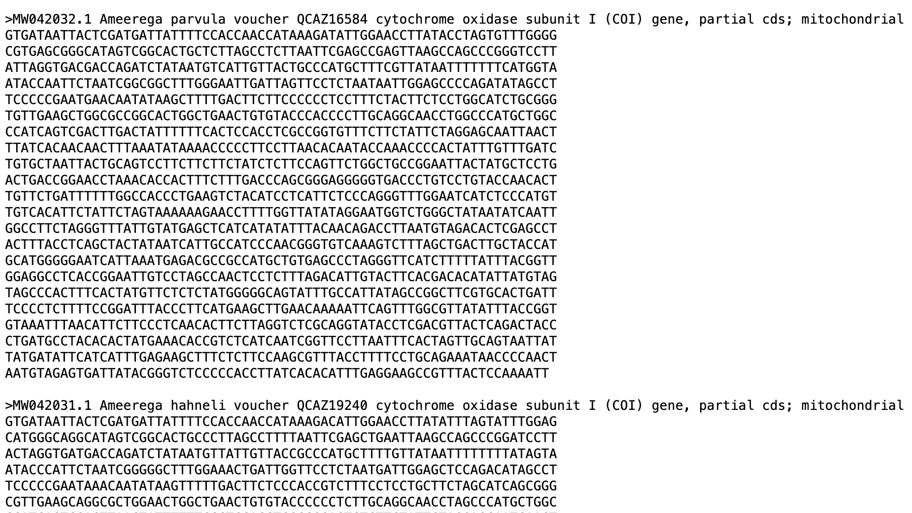
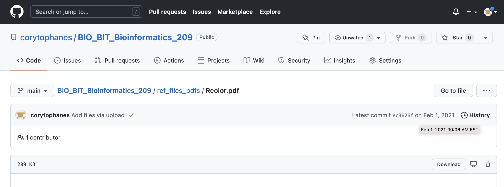
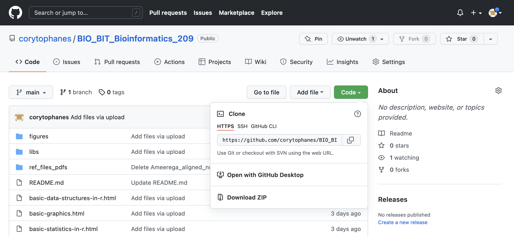

Session 2 – Using R, Installing Packages and Importing/Exporting Data
2.1 Your first session
You will start by entering commands in the console.
1) After clicking on the R icon you should see the R console and the computer will be ready to receive commands
This is the R console in a macOS computer.
2) The blinking command will be next to R prompts which are indicated by >. This basically indicates where you can start typing commands like a excel or a calculator. Let’s try a simple addition:
1 + 2
#[1] 3You can try more complicated calculations like the natural logarithm of 10:
log(10)
#[1] 2.302585The R console gives you a [1] that indicates that the result is a vector of one element or scalar (i.e., 3 or 2.302585). If more that 1, this is called a vector and R will number elements sequentially in a vector. For example, you can ask for an expression for a sequence of number form 1 to 100 by addition of 1 as seq(1:100). This vector will have 100 elements.
seq(1:100)
#[1] 1 2 3 4 5 6 7 8 9 10 11 12 13 14 15 16 17 18 19
#[20] 20 21 22 23 24 25 26 27 28 29 30 31 32 33 34 35 36 37 38
#[39] 39 40 41 42 43 44 45 46 47 48 49 50 51 52 53 54 55 56 57
#[58] 58 59 60 61 62 63 64 65 66 67 68 69 70 71 72 73 74 75 76
#[77] 77 78 79 80 81 82 83 84 85 86 87 88 89 90 91 92 93 94 95
#[96] 96 97 98 99 1003) R provides easy command-line editing tools that will help you to recall previous commands. This help you change parameters in the expression or correct typos in it. For example,
# Same result as before
seq(from = 1, to = 100, by =1)
# [1] 1 2 3 4 5 6 7 8 9 10 11 12 13 14 15 16 17 18 19
# [20] 20 21 22 23 24 25 26 27 28 29 30 31 32 33 34 35 36 37 38
# [39] 39 40 41 42 43 44 45 46 47 48 49 50 51 52 53 54 55 56 57
# [58] 58 59 60 61 62 63 64 65 66 67 68 69 70 71 72 73 74 75 76
# [77] 77 78 79 80 81 82 83 84 85 86 87 88 89 90 91 92 93 94 95
# [96] 96 97 98 99 100You can press arrow up or Ctrl-P to recall previous command and we can change the argument by = to get sequence by addition of 5 instead of 1.
seq(from = 1, to = 100, by =5)
#[1] 1 6 11 16 21 26 31 36 41 46 51 56 61 66 71 76 81 86 91 96Typing errors are easy to introduce and R will let you know about then. For example, I forgot to add the = after to 100. This is not valid, and an error is produced.
seq(from = 1, to 100, by =5)
#Error: unexpected numeric constant in "seq(from = 1, to 100"Now, you can press arrow up to fix the error in the previous command and it can be fixed.
4) Here are some basic functions with numeric vectors. Let’s get create a vector of numbers named my_vector by assigning seven random numbers to it using the arrow <- known as the assign operator (the = also works in similar fashion) and the function c().
my_vector <- c(2,4,1,12,30,5,6)The c() is a base function to combine values into a vector or list.
5) You can read or retrieve the contents of my_vector by typing its name.
my_vector
#[1] 2 4 1 12 30 5 6 6) You can also get the structure of my_vector by using str(). This function provides a compactly display the structure of an arbitrary R object (e.g., a vector). This provides a diagnostic description and summary what is contains.
str(my_vector)
#num [1:7] 2 4 1 12 30 5 6 This indicates that the structure of my_vector is a numeric vector with 7 numbers.
2.2 Doing some base functions and getting help
1) Let’s create a new my_vector. This will overwrite the previous one.
my_vector <- rnorm(n = 1000, mean = 50, sd = 25)
# I omitted the result because it has 1000 numbers
my_vectorThe function rnorm() will draw n random numbers (in this case 1000) of a normal distribution with mean 50 and standard deviation of 25.
2) We can get the structure of my_vector.
str(my_vector)
#num [1:1000] 50.3 60.3 20.4 44.1 43.8 ...The structure of the my_vector object indicates that is a numeric vector of 1000 numbers.
3) We can confirm that the mean is 50 by using the function mean() and its standard deviation of 25 by using the function sd().
mean(my_vector)
#[1] 50.29036
sd(my_vector)
#[1] 25.05207As you can see in this example, the mean and standard deviation are not exactly 50 and 25, respectively. However, it is very close as these parameters inputted in the rnorm() function.
4) We can get some information about each function used with the following using function ? and help(). You put the function that you want to get information after ? or within the parenthesis of help().
# get help about function 'mean'
?mean
# another way to ask help
help(mean)The functions ? and help() provide a link into a new window with the corresponding manual of that function and how it is use and (in most cases) examples.
This a transcript of the popup window for the help of mean. The name within {} is the library or package that it is from in this case base.
mean {base}
The long name of the mean() function, in this case: Arithmetic Mean.
A description of the mean() function, in this case: "Generic function for the (trimmed) arithmetic mean"
A usage example:
mean(x, ...)
## Default S3 method:
mean(x, trim = 0, na.rm = FALSE, ...)
An explanation of its arguments:
x -- An R object. Currently there are methods for numeric/logical vectors and date, date-time and time
interval objects. Complex vectors are allowed for trim = 0, only.
trim -- the fraction (0 to 0.5) of observations to be trimmed from each end of x before the mean is computed.
Values of trim outside that range are taken as the nearest endpoint.
na.rm -- a logical value indicating whether NA values should be stripped before the computation
proceeds.
... -- further arguments passed to or from other methods.Further information about the function mean() are provided in the same pop up window as value, references and related functions. Finally, examples of how to use mean() are also provided.
x <- c(0:10, 50)
xm <- mean(x)
c(xm, mean(x, trim = 0.10))5) Some basic functions for numeric vectors.
# Arithmetic Mean
mean(my_vector)
# Standard Deviation
sd (my_vector)
# Variance
var (my_vector)
# Median Value
median (my_vector)
# Maximum Value
max (my_vector)
# Minimum Value
min (my_vector)
# Sums values in vector
sum(my_vector)
# Provides the number of elements in the vector
length(my_vector)
# Round numbers to of elements in the vector to number of digits
round(3.1415, digits = 2)6) Some other basic functions between two numeric vectors.
my_vector2 <- c(1:1000)
# get the correlation between two vectors
cor(my_vector, my_vector2) # Correlation between two numeric vectors
#[1] -0.001297859
# get the covariance between two vectors
cov(my_vector, my_vector2) # Covariance between two numeric vectors
#[1] -9.3906927) You can print what is in a vector (or object) or return the result of calculation, you just can type its name on the console and get what is contained on it. You can also use the function print().
1:10
#[1] 1 2 3 4 5 6 7 8 9 10
my_numbers <- 1:10
my_numbers
#[1] 1 2 3 4 5 6 7 8 9 10
print(my_numbers)
#[1] 1 2 3 4 5 6 7 8 9 108) We can construct a character vector my_names with text (i.e., string vector) that contains letter or numbers that are treated as text (i.e., not quantities).
my_names <- c("juan", "c", "santos", 123)
my_names
#[1] "juan" "c" "santos" "123"
print(my_names)
#[1] "juan" "c" "santos" "123"You can revise its structure with str(). You will notice that the numbers are within quotations.
str(my_names)
#chr [1:4] "juan" "c" "santos" "123"9) Some more complex R data structures like matrices, lists or data.frames can also be printed and visualized using print().
my_matrix <- matrix(c(1,2,3,4,5,6), 3,2)
print(my_matrix)
# [,1] [,2]
#[1,] 1 4
#[2,] 2 5
#[3,] 3 6In this case, we are printing the object my_matrix that has the numbers in the sequence from 1 to 6 in 3 rows and 2 columns.
10) However, print() can only return one object at a time.
print(my_numbers, my_names, my_matrix)
#Error in print.default(my_numbers, my_names, my_matrix) :
# invalid 'digits' argument
#In addition: Warning message:
#In print.default(my_numbers, my_names, my_matrix) :
# NAs introduced by coercionIn this case cannot print the three objects (i.e., my_numbers, my_names, my_matrix) at the same time.
11) We can use the function like cat() that allows you to concatenate and print several objects.
cat(my_numbers,my_names)
#1 2 3 4 5 6 7 8 9 10 juan c santos 12312) One common use of the function cat() is to provide users with screen reports (i.e., print on the screen) on the status of a process that the computer is doing while running iterations or loops that are recursive and time consuming.
cat("\nPrint the two vectors my_numbers and my_names separed by *** ",
my_numbers,
" *** ",
my_names)
#Print the two vectors my_numbers and my_names separed by *** 1 2 3 4 5 6 7 8 9 10 *** juan c santos 12313) You can also list all object “in memory” that is to display the names of objects in your
workspace using function ls().
ls()
#[1] "my_matrix" "my_names" "my_numbers" "my_vector" You can also list objects and their structure with the function ls.str().
ls.str()
#my_matrix : num [1:3, 1:2] 1 2 3 4 5 6
#my_names : chr [1:3] "juan" "c" "santos" "123"
#my_numbers : int [1:10] 1 2 3 4 5 6 7 8 9 10
#my_vector : num [1:1000] 50.3 60.3 20.4 44.1 43.8 ... 14) You can also remove objects from your workspace with the function rm().
my_names
#[1] "juan" "c" "santos" "123"
rm("my_names")
my_names
#Error: object 'my_names' not found
#In this case the object "my_names" has been removed from the workspace2.3 About R-packages
R packages are a collection of R scripts of functions, libraries, datasets, and add-ons that can be call and loaded upon using library(). These packages add functions to the base packages and might include code written in other languages like C, Python, Fortran, etc. The packages are stored under a library directory called in the R environment by library(). However, these add-ons packages need to install by user, many require other packages to be able to run, and called beforehand into the R environment before use. For this workshop, we will install several packages based on data analyses, graphs and other computational needs.
Before you install an R package
One of the strengths of the R environment is the growing set of packages that can be installed and loaded to do specific analyses, plots, calculations and data management within this environment. To date (01/25/22), a total of CRAN repository features 18798 available packages written by the R community. To find all available packages, you can check the left menu under Software and click on Packages.
These are usually two list based on (1) sorted by date of publication and (2) sorted by name.
Some of the few disadvantages of such diversity of R-packages is that many of these packages might overlap in their functions, their function names, vary in the difficulty of their implementations, bugs and inherent errors in the scripts/functions (i.e., there is no warranty that they will work as described, the user has to evaluate the output). Given the open nature of these R-packages, the user can access the source code and modify, improve, adapt, combine, repurpose, etc.
Some packages eventually become obsolete and disappear from CRAN if they are not maintained. However, those can be found in CRAN archives and might require a more convoluted installation (described below).
2.4 Installing packages
1) Check what packages are preloaded or were loaded in the R environment before installing new one using the function search().
search()
#[1] ".GlobalEnv" "tools:RGUI" "package:stats" "package:graphics" "package:grDevices" "package:utils"
#[7] "package:datasets" "package:methods" "Autoloads" "package:base" 2) Before you install a package, you could check which are useful to your intended goal. In most cases, you will already know what you want. However, if you are unsure, you could check the suggestions by R community posted in the CRAN Task Views. Here are some of the communities relevant for our workshop:
CRAN Task View: Statistical Genetics:
CRAN Task View: Phylogenetics, Especially Comparative Methods:
CRAN Task View: Teaching Statistics:
CRAN Task View: Multivariate Statistics:
CRAN Task View: Bayesian Inference:
3) To install a package that you want and you can use install.packages() as indicated below.
install.packages("reshape2")You will be prompted to select a CRAN mirror. Usually take the one geographically close like: USA (OH) [https] or the cloud: 0-Cloud [http]. Once you have accepted it will proceed to install. Sometimes, some other packages are required and R will install those during the process. In some rare cases, you might need to install those on your own (i.e., not authomatic installation)
install.packages("reshape2")
#--- Please select a CRAN mirror for use in this session ---
#trying URL 'https://cloud.r-project.org/bin/macosx/el-capitan/contrib/3.6/reshape2_1.4.4.tgz'
#Content type 'application/x-gzip' length 333148 bytes (325 KB)
#==================================================
#downloaded 325 KB
#The downloaded binary packages are in
# /var/folders/vx/rjmrkyz566zf4khl9xjhkqyr0000gp/T//RtmpwxVTvt/downloaded_packages4) For PC users, you might need to define a folder (R library) where you R-packages will be kept.
5) To load a R-package already installed, call for its name using library().
library(reshape)if the library is successfully loaded, you will get NO RESPONSE in most cases as above. Some packages will report some information about the package being loaded successfully.
6) If errors occurs and the selected R-package was not installed, R will let know that there is a problem in some form.
## if the package name is misspelled or does not exist in CRAN then:
install.packages("my_madeup_package")
# Warning message:
# package ‘my_madeup_package’ is not available (for R version 3.6.2) 7) If did not installed the R-package beforehand, R will also let you know that the package is not installed in your library.
library(my_madeup_package)
# Error in library(my_madeup_package) :
# there is no package called ‘my_madeup_package’8) To install packages from older versions or no longer maintained in CRAN, you need to install this R-package ‘devtools’.
install.packages("devtools")
library(devtools)9) For example, we will install an older version (i.e., ver 1.4.3) of the R-package ‘FlexParamCurve’, which is a statistics tool to fit complex parametric curves.
install_version("FlexParamCurve", version = "1.4.3", repos = "http://cran.us.r-project.org")
#Downloading package from url: http://cran.us.r-project.org/src/contrib/Archive/FlexParamCurve/FlexParamCurve_1.4-3.tar.gz
#* installing *source* package ‘FlexParamCurve’ ...
#** package ‘FlexParamCurve’ successfully unpacked and MD5 sums checked
#** using staged installation
#** R
#** data
#** byte-compile and prepare package for lazy loading
#** help
#*** installing help indices
#** building package indices
#** testing if installed package can be loaded from temporary location
#** testing if installed package can be loaded from final location
#** testing if installed package keeps a record of temporary installation path
#* DONE (FlexParamCurve)10) Most genetic, genomic, transcriptomic R-packages are Bioconductor. To date (1/26/22), this archive has 2083 packages. To install packages present on this archive, you need to follow the next instructions.
## test if 'BiocManager' is installed
if (!requireNamespace("BiocManager", quietly = TRUE)) {install.packages("BiocManager")}Now, we can use the function BiocManager::install("my_desired_bioconductor_package"). For example, we can install an excellent sequence aligner that is the Bioconductor R-package DECIPHER.
BiocManager::install("DECIPHER")Note that R will ask you to update your older packages, in most cases you decline (i.e., type ‘n’).
Update all/some/none? [a/s/n]: n11) Some experimental or not yet released R-packages are sometimes stored in the developers’ repositories like GitHub (like this gitbook). This website has become one of the most popular store websites for free software for a diversity of fields. To install such packages you use again ‘devtools’
library(devtools)
# install_github("github_handler/package_name"
# installing httr for web API (application programming interface) like donwload of data from the web
install_github("r-lib/httr")2.5 Downloading data files (GitHub)
IMPORTANT I uploaded some files of this class, you can access those and download them from this LINK TO FILES of BIO/BIT 209 to a folder of your choosing.
You can download individual files based in their extension. In the case of text files (e.g., .csv, .fasta, .txt), you can follow these steps:
1) Go to the file you want to download. Click on the file that you want to download. You will see the file contents.

2) In the top right, you will see a tab that says Raw and click on this button.

3) A new tab will appear and you can save this file as your_file.txt (if this is fasta or csv, use the appropriate extension). In Firefox (MACs), you will click on File > Save page as… and can name this file as your_file.txt
 4) You probably want to have a working directory where you will store these files. You should make these folders with easy and accessible paths (e.g., in your desktop).
In case of other files like PDFs, images, word, and excel files (e.g., .pdf, .jpg, .png, .xlxs, .docx), you can download those individually with the following steps:
1) Go to the file you want to download.

2) Click on the file that you want to download. You will see a tab that says Download and click on this button.

3) A new tab will appear and you can save this file as your_file and select the extension that best suits this file. In Firefox (MACs), you will click on File > Save page as… and can name this file as your_file.txt
4) You probably want to have a working directory where you will store these files. You should make these folders with easy and accessible paths (e.g., in your desktop).
You can download an entire GitHub repository. You can download these archives from the main repository by clicking on Code. A submenu will appear, and you can click on Download ZIP and you can place this uncompressed folder in your desktop or other working directory.

2.6 Importing and exporting data
Importing data is crucial for analyses in R as most of these are produced, retrieved or generated by other software. For example, measurements might be collected and annotated in excel sheets, sequences might be encoded in fasta/fastq forma in text files, images are stored as .tiff, .jpeg or other formats, sound might be encoded in .wav, etc. A great advantage of R is that the same base software or R-packages can serve to bring those datasets into the R environment. However, most of these are imported as standard R data structures as data frames (i.e., similar to matrices with columns and rows that contain a single value). Next, we will survey the most common forms to data input
1) The simples way to input data in R by typing data in the R console. We explain this in more detail when we describe data structures. However, this should intuitive as follows.
## create a vector with some values named 'my_vector'
my_vector <- c(1,4,5,2:20,99)
my_vector
#[1] 1 4 5 2 3 4 5 6 7 8 9 10 11 12 13 14 15 16 17 18 19 20 992) In most cases, you already have your data file in some folder in your computer or plan to import it from some online repository. In the case of importing data from file from a known folder in your computer, this can be done as easily in R.
First, I will describe to import data from a text file with a tab delimited columns with numeric and character values.
macOS: You need to get the path (folder location in your hard drive) so you can indicate R where to retrieve such information. For example, the file that you want is known folder. You just drag & drop the folder in the R console and the path information will appear on it.
# ~/Desktop/Teach_R/class_datasets
# Next, we can explore what files are inside such folder.
# NOTE THAT THIS PATH IS SPECIFIC FOR YOUR COMPUTER
setwd("~/Desktop/Teach_R/class_datasets")
path_to_my_datafiles <- "~/Desktop/Teach_R/class_datasets"Note: You can get the path directly to the file by drag & drop the file into the R console.
Windows: For PCs, to get the path (folder location in your hard drive) so you can indicate R where to retrieve such information. For example, the file that you want is known folder. You need to find the path to this working directory. For this you need to highlight this folder, hold down the Shift key and right-click the file.
Then, you click on Properties and copy the names (text) of Location that includes the folder and file names. For example, if you want to change your working directory to the folder icon class_datasets (this is a made-up folder, you can name it as you wish or might one specific one).
Find its location: C:\Users\myPC\Desktop
You will get its path name as: C:\Users\myPC\Desktop\my_working_directory\class_datasets
Then use the setwd() function as follows
setwd("C:\Users\myPC\Desktop\my_working_directory\class_datasets")In some PCs, this will change the working directory to its desired path. However, in most, you will get the following error
setwd("C:\Users\myPC\Desktop\my_working_directory\class_datasets")
#Error: '\U' used without hex digits in character string starting ""C:\U"This indicates that the R is recognizing the \ (backslashes) as part of regular expressions. To make it work, you will need to change such \ character to / (forward slashes).
setwd("C:/Users/myPC/Desktop/my_working_directory/class_datasets")
getwd()
#[1] "C:/Users/myPC/Desktop/my_working_directory/class_datasets"Other have reported is to use double backslashes \\
setwd("C:\\Users\\myPC\\Desktop\\my_working_directory\\class_datasets")
getwd()
#[1] "C:/Users/myPC/Desktop/my_working_directory/class_datasets "Note: Like in macOS, you can apply the same protocol for a file rather than a folder.
3) You can get a list of files inside that working directory using file.list().
setwd("~/Desktop/Teach_R/class_datasets")
path_to_my_datafiles <- "~/Desktop/Teach_R/class_datasets"
list.files(path = path_to_my_datafiles,
pattern = NULL,
full.names = TRUE)
#[1] "/Users/juansantos/Desktop/Teach_R/class_datasets/acetylcholine_receptor_popset_1248341763_protein.txt"
#[2] "/Users/juansantos/Desktop/Teach_R/class_datasets/acetylcholine_receptor_popset_1248341763.txt"
#[3] "/Users/juansantos/Desktop/Teach_R/class_datasets/acetylcholine_receptor_Uniprot.txt"
#[4] "/Users/juansantos/Desktop/Teach_R/class_datasets/airway_scaledcounts.csv"
my_vector_of_paths <- list.files(path = path_to_my_datafiles, full.names = TRUE)You can select the type of text pattern or extension (e.g., .txt, .csv, .xlsx) to reduce the list of files.
#we could select only those that have a .csv (comma delimited) files
list.files(path = path_to_my_datafiles,
pattern = "*.csv",
full.names = TRUE)
# [1] "/Users/santosj/Desktop/Teach_R/class_datasets/airway_scaledcounts.csv"
# [2] "/Users/santosj/Desktop/Teach_R/class_datasets/mtcars2_csv.csv" 4) We can now import the data of tab and comma delimited files as data frames (a data structure).
# for tab delimited files while preserving headers
my_mtcars2_file_df <- read.table (file = "~/Desktop/Teach_R/class_datasets/mtcars2_file_tab.txt",
header = TRUE,
sep = "\t",
stringsAsFactors = FALSE)
head(my_mtcars2_file_df)
# cars mpg cyl disp hp drat wt qsec vs am gear carb
#1 Mazda_RX4 21.0 6 160 110 3.90 2.620 16.46 0 1 4 4
#2 Mazda_RX4_Wag 21.0 6 160 110 3.90 2.875 17.02 0 1 4 4
#3 Datsun_710 22.8 4 108 93 3.85 2.320 18.61 1 1 4 1
#4 Hornet_4_Drive 21.4 6 258 110 3.08 3.215 19.44 1 0 3 1
#5 Hornet_Sportabout 18.7 8 360 175 3.15 3.440 17.02 0 0 3 2
#6 Valiant 18.1 6 225 105 2.76 3.460 20.22 1 0 3 1# for comma delimited files while preserving headers
my_airway_file_df <- read.table (file = "~/Desktop/Teach_R/class_datasets/airway_scaledcounts.csv",
header = TRUE,
sep = ",",
stringsAsFactors = FALSE)
head(my_airway_file_df)
# ensgene SRR1039508 SRR1039509 SRR1039512 SRR1039513 SRR1039516 SRR1039517 SRR1039520 SRR1039521
#1 ENSG00000000003 723 486 904 445 1170 1097 806 604
#2 ENSG00000000005 0 0 0 0 0 0 0 0
#3 ENSG00000000419 467 523 616 371 582 781 417 509
#4 ENSG00000000457 347 258 364 237 318 447 330 324
#5 ENSG00000000460 96 81 73 66 118 94 102 74
#6 ENSG00000000938 0 0 1 0 2 0 0 05) You can save data frames as tab or comma delimited files using the function write.table(). However, you should make sure that the folder where you will like your files to be saved is defined.
#define the the output folder
setwd("~/Desktop/Teach_R/class_datasets")
#confirm that the output directory is correct
getwd()
#[1] "/Users/juansantos/Desktop/Teach_R/class_datasets""
# to determine the separation between columns is defined by the argument 'sep ='. For tabs, you use sep =”\t” and for commas you use sep =”,”
write.table(my_mtcars2_file_df,
file = "mtcars2_file_tab.txt",
sep = "\t",
col.names = TRUE)6) We can now import the data from Excel spreadsheet files as data frames (a data structure). We could use R-package openxlsx and its function read.xlsx().
#install package if not present in your library
install.packages("openxlsx")
library(openxlsx)You can load the FIRST sheet to a data frame that has headers on the first row.
my_mtcars2_xlsx_df <- read.xlsx(xlsxFile = "~/Desktop/Teach_R/class_datasets/mixed_datasets.xlsx",
sheet = 1,
startRow = 1,
colNames = TRUE)
head(my_mtcars2_xlsx_df)
# cars mpg cyl disp hp drat wt qsec vs am gear carb
#1 Mazda_RX4 21.0 6 160 110 3.90 2.620 16.46 0 1 4 4
#2 Mazda_RX4_Wag 21.0 6 160 110 3.90 2.875 17.02 0 1 4 4
#3 Datsun_710 22.8 4 108 93 3.85 2.320 18.61 1 1 4 1
#4 Hornet_4_Drive 21.4 6 258 110 3.08 3.215 19.44 1 0 3 1
#5 Hornet_Sportabout 18.7 8 360 175 3.15 3.440 17.02 0 0 3 2
#6 Valiant 18.1 6 225 105 2.76 3.460 20.22 1 0 3 1Now, you can load the SECOND sheet to a data frame that has headers on the first row.
my_airway_xlsx_df <- read.xlsx(xlsxFile = "~/Desktop/Teach_R/class_datasets/mixed_datasets.xlsx",
sheet = 2,
startRow = 1,
colNames = TRUE)
head(my_airway_xlsx_df)
# ensgene SRR1039508 SRR1039509 SRR1039512 SRR1039513 SRR1039516 SRR1039517 SRR1039520 SRR1039521
#1 ENSG00000000003 723 486 904 445 1170 1097 806 604
#2 ENSG00000000005 0 0 0 0 0 0 0 0
#3 ENSG00000000419 467 523 616 371 582 781 417 509
#4 ENSG00000000457 347 258 364 237 318 447 330 324
#5 ENSG00000000460 96 81 73 66 118 94 102 74
#6 ENSG00000000938 0 0 1 0 2 0 0 07) We can save a data frame as an Excel spreadsheet with R-package openxlsx and its function write.xlsx().
#define the the output folder
setwd("~/Desktop/Teach_R/class_datasets")
#confirm that the output directory is correct
getwd()
#[1] "/Users/juansantos/Desktop/Teach_R/class_datasets""
my_airway_xlsx_df <- write.xlsx(my_mtcars2_file_df,
sheetName = "my_mtcars_xlsx_sheet",
file = "mtcars_xlsx.xlsx")2.7 Saving data as Rdata (.rdata, .rda)
You might feel compelled to save your R session. This action will store your complete R workspace or selected “objects” from a workspace in a R-Data file with extension .rdata and .rda that can be loaded back by R. In most cases, you will do this to save you time in your next session. I do not usually save my R sessions, as the .rdata and .rda files are not human readable, and in most cases my interest are in the functionality of the scripts that call data and run functions within R rather than going back a preloaded session.